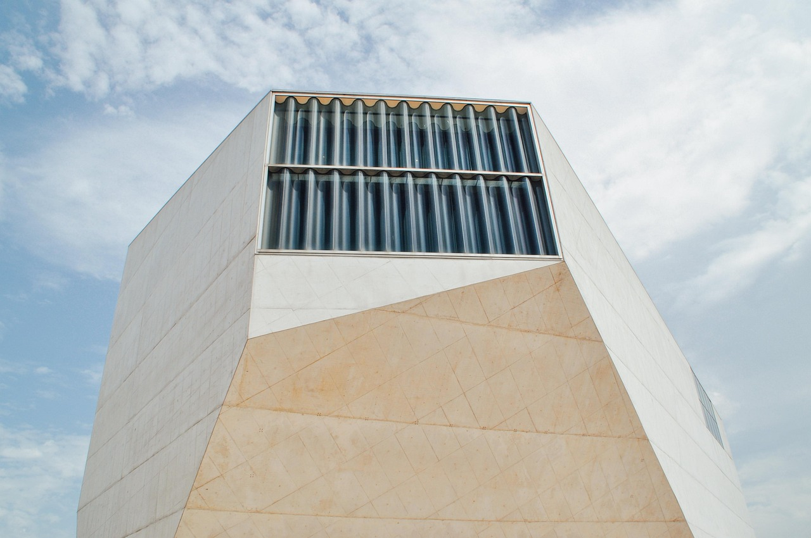
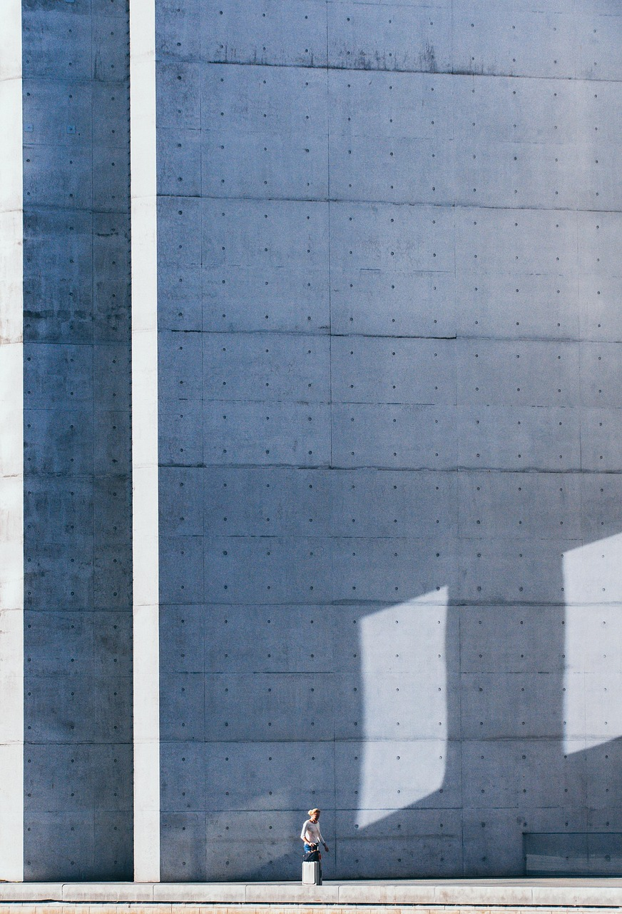

- Completed
- 2024
- Area
- 2,100 m²
- Client
- Harbor Trust, city partnership
- Scope
- Architecture, public realm, wayfinding
A hall for the harbor, not a harbor for the hall.
The Harbor Trust's brief came with a tension every waterfront commission carries: the building needed to draw people to the water, and the water already had people working on it. Lobster boats, a chandlery, a ferry landing that runs on schedule and resents crowds. The pavilion had to earn its ground-floor rent from both audiences at once.
The answer is two white rendered volumes on a granite plinth that reads as harbor infrastructure, because that is what it is. The lower volume holds the working program: workshop, cold storage, ticket hall, all open to the quay. The upper volume holds the event hall and its terrace, lifted above the working water so the boats stay visible underneath it rather than hidden behind it.
The deep facade openings are tuned by hand: the harbor side keeps its view and takes the weather on a recessed loggia, while the town side opens fully onto the new square the Trust bought to stop the site becoming a private plaza. On a festival weekend the hall can hold 400 people. On a Tuesday in February, a class from the maritime school uses it, the rent waived.
Two years in, the numbers the Trust watches look like this: 190 public events, 31,000 visitors, and not one complaint from the ferry office. The last one mattered most.

